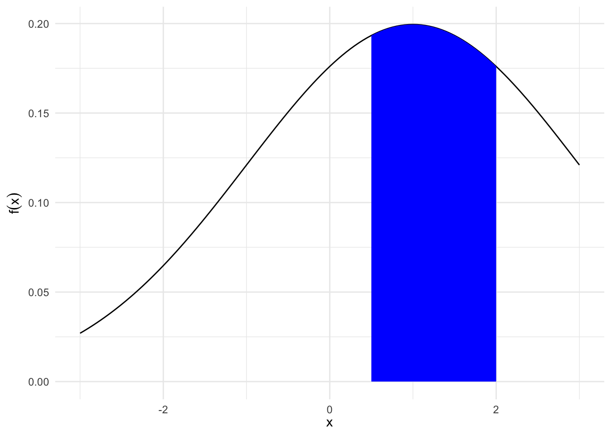
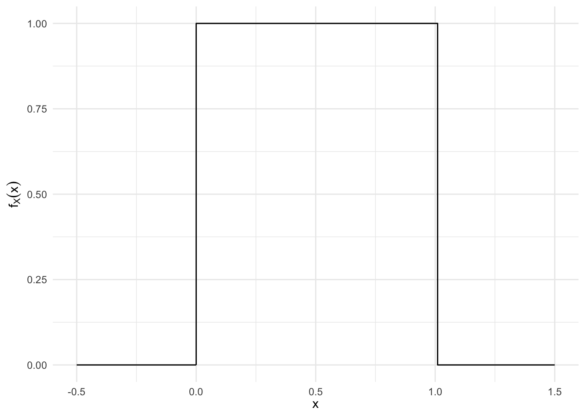
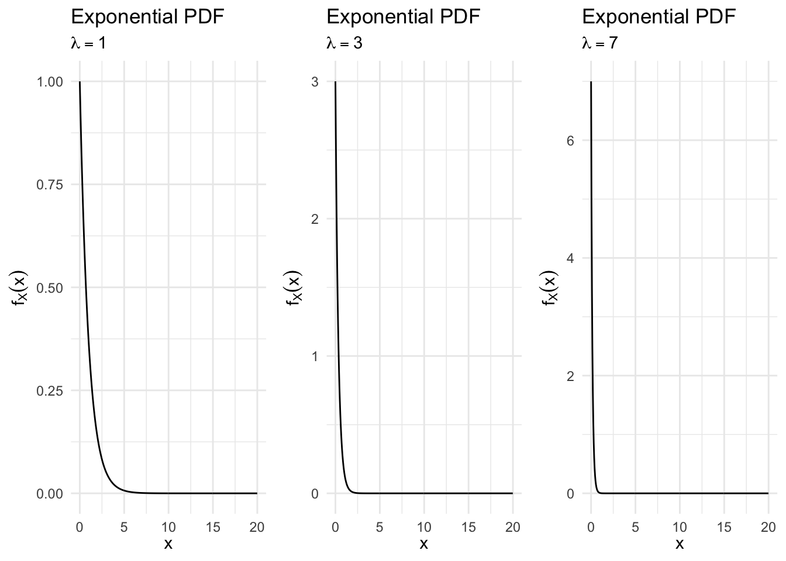
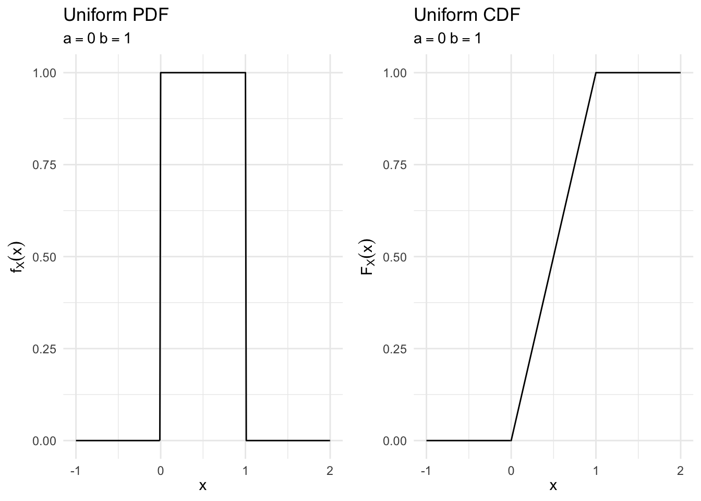
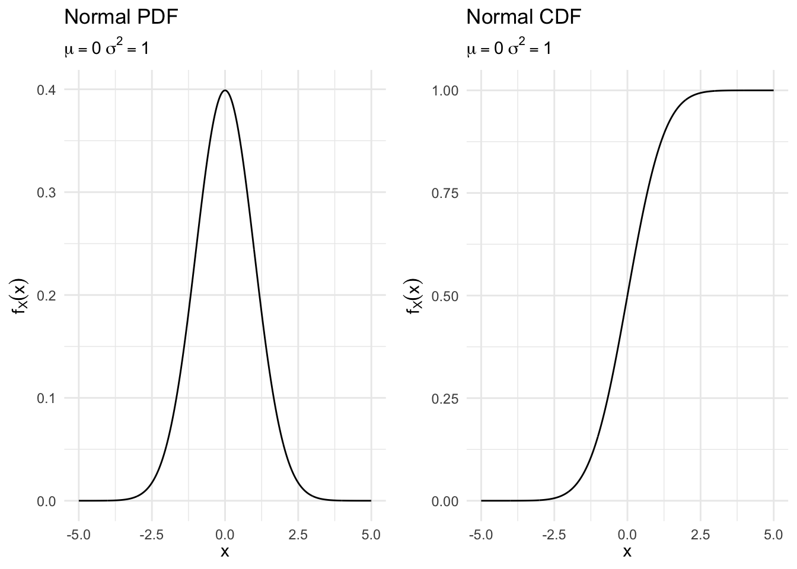
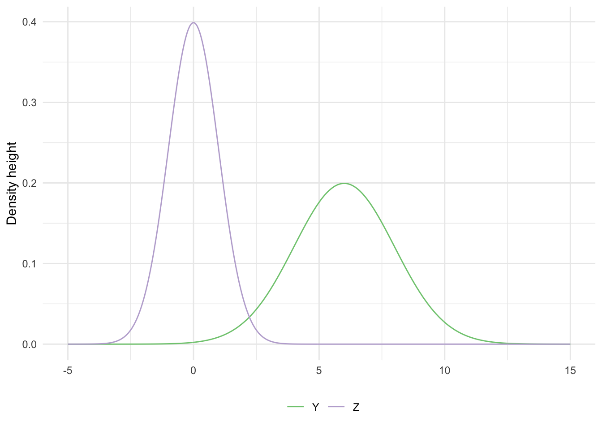
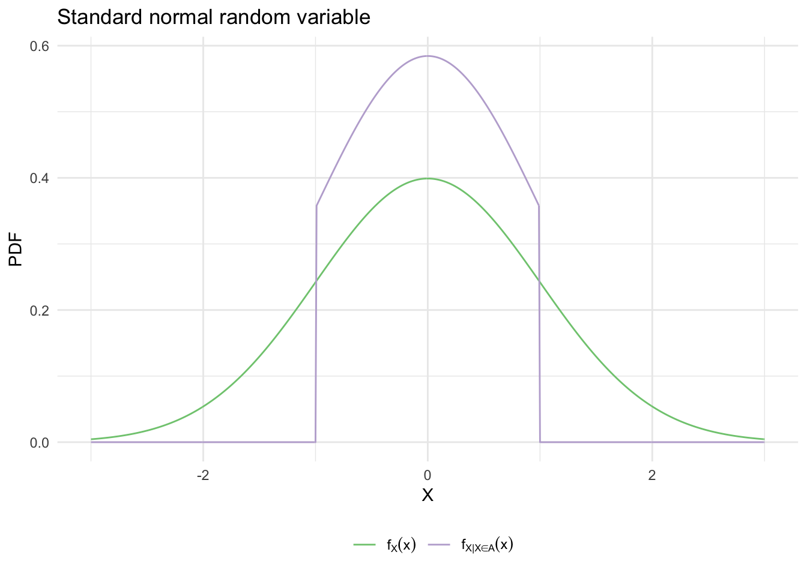

library(tidyverse)
library(broom)
library(patchwork)
options(digits = 3)
set.seed(1234)
theme_set(theme_minimal())\[\newcommand{\E}{\mathrm{E}} \newcommand{\Var}{\mathrm{Var}} \newcommand{\Cov}{\mathrm{Cov}}\]
norm_pdf <- data_frame(x = seq(-3, 3, by = .05),
y = dnorm(x = x, mean = 1, sd = 2),
fill = x >= .5 & x <= 2)
ggplot(norm_pdf) +
geom_line(aes(x, y)) +
geom_ribbon(data = filter(norm_pdf, fill),
aes(x = x,
ymin = 0, ymax = y),
fill = "blue") +
labs(x = expression(x),
y = expression(f(x)))
What is the area under the curve under \(f(x)\) between \(.5\) and \(2\)?
\[\int_{1/2}^{2} f(x)dx = F(2) - F(1/2)\]
\(X\) is a continuous random variable if there exists a nonnegative function defined for all \(x \in \Re\) having the property for any (measurable) set of real numbers \(B\),
\[ \begin{eqnarray} \Pr(X \in B) & = & \int_{B} f_X(x)dx \end{eqnarray} \]
The probability that the value of \(X\) falls within an interval is
\[\Pr (a \leq X \leq b) = \int_a^b f_X(x) dx\]
and can be interpreted as the area under the graph of the PDF. For any single value \(a\), we have \(\Pr (X = a) = \int_a^a f_X(x) dx = 0\). Note that to qualify as a PDF, a function \(f_X\) must be nonnegative, i.e. \(f_X(x) \geq 0\) for every \(x\), and must also have the normalization property
\[\int_{-\infty}^{\infty} f_X(x) dx = \Pr (-\infty \leq X \leq \infty) = 1\]
\(X \sim \text{Uniform}(0,1)\)
\[ f_X(x) = \left\{ \begin{array}{ll} c & \quad \text{if } 0 \leq x \leq 1 \\ 0 & \quad \text{otherwise} \end{array} \right. \]
for some constant \(c\). The constant can be determined from the normalization property
\[1 = \int_{-\infty}^{\infty} f_X(x)dx = \int_0^1 c dx = c \int_0^1 dx = c\]
so that \(c=1\).
data_frame(x = seq(-.5, 1.5, by = .01),
y = dunif(x)) %>%
ggplot(aes(x, y)) +
geom_step() +
labs(x = expression(x),
y = expression(f[X](x)))
\[ \begin{eqnarray} \Pr(X \in [0.2, 0.5]) & = & \int_{0.2}^{0.5} 1 dx \nonumber \\ & = & X |^{0.5}_{0.2} \nonumber \\ & = & 0.5 - 0.2 \nonumber \\ & = & 0.3\nonumber \end{eqnarray} \]
\[ \begin{eqnarray} \Pr(X \in [0, 1] ) & = & \int_{0}^{1} 1 dx \nonumber \\ & = & X |^{1}_{0} \nonumber \\ & = & 1 - 0 \nonumber \\ & = & 1 \nonumber \end{eqnarray} \]
\[ \begin{eqnarray} \Pr(X \in [0.5, 0.5]) & = & \int_{0.5}^{0.5} 1dx \nonumber \\ & = & X|^{0.5}_{0.5} \nonumber \\ & = & 0.5 - 0.5 \nonumber \\ & = & 0 \nonumber \end{eqnarray} \]
\[ \begin{eqnarray} \Pr(X \in \{[0, 0.2]\cup[0.5, 1]\}) & = & \int_{0}^{0.2} 1dx + \int_{0.5}^{1} 1dx \nonumber \\ & = & X_{0}^{0.2} + X_{0.5}^{1} \nonumber \\ & = & 0.2 - 0 + 1 - 0.5 \nonumber \\ & = & 0.7 \nonumber \end{eqnarray} \]
More generally, the PDF of a uniform random variable has the form
\[ f_X(x) = \left\{ \begin{array}{ll} \frac{1}{b-a} & \quad \text{if } a \leq x \leq b \\ 0 & \quad \text{otherwise} \end{array} \right. \]
The expected value of a continuous random variable \(X\) is defined as
\[\E[X] = \int_{-\infty}^{\infty} x f_X(x) dx\]
This is similar to the discrete case except instead of a summation operation, we use integration to calculate the expected value. If \(X\) is a continuous random variable with a given PDF, any real-valued function \(Y = g(X)\) is also a random variable. The mean of \(g(X)\) satisfies the expected value rule:
\[\E[g(X)] = \int_{-\infty}^{\infty} g(x) f_X(x) dx\]
Consider a uniform PDF over an interval \([a,b]\):
\[ \begin{align} \E[X] = \int_{-\infty}^{\infty} x f_X(x) dx &= \int_a^b x \times \frac{1}{b-a} dx \\ &= \frac{1}{b-a} \times \frac{1}{2}x^2 \Big|_a^b \\ &= \frac{1}{b-a} \times \frac{b^2 - a^2}{2} \\ &= \frac{a+b}{2} \end{align} \]
To obtain the variance, we first calculate the second moment. We have
\[ \begin{align} \E[X^2] = \int_a^b x^2 \times \frac{1}{b-a} dx &= \frac{1}{b-a} \int_a^b x^2 dx \\ &= \frac{1}{b-a} \times \frac{1}{3}x^3 \Big|_a^b \\ &= \frac{b^3 - a^3}{3(b-a)} \\ &= \frac{a^2 + ab + b^2}{3} \end{align} \]
Thus, the variance is
\[ \begin{align} \Var(X) = \E[X^2] - (\E[X])^2 = \frac{a^2 + ab + b^2}{3} - \left( \frac{a+b}{2} \right)^2 = \frac{(b-a)^2}{12} \end{align} \]
An exponential random variable has a PDF of the form
\[ f_X(x) = \left\{ \begin{array}{ll} \lambda e^{-\lambda x} & \quad \text{if } x \geq 0 \\ 0 & \quad \text{otherwise} \end{array} \right. \]
where \(\lambda\) is a positive parameter characterizing the PDF.
exp_pdf <- function(rate){
data_frame(x = seq(0, 20, by = .05),
pmf = dexp(x = x, rate = rate)) %>%
ggplot(aes(x, pmf)) +
geom_line() +
labs(title = "Exponential PDF",
subtitle = bquote(lambda == .(rate)),
x = expression(x),
y = expression(f[X] (x)))
}
exp_pdf(1) +
exp_pdf(3) +
exp_pdf(7)
\[\E[X] = \frac{1}{\lambda}, \quad \Var(X) = \frac{1}{\lambda^2}\]
It is frequently used to model phenomena of a continuous nature such as the time between arrivals (e.g. time between customers arriving at a restaraunt) and the distance between occurrences (e.g. distance between defects in a plate glass window). It is closely associated with the Poisson discrete random variable, which we will return to later.
For a continuous random variable \(X\) define its cumulative distribution function (CDF) \(F_X(x)\) as,
\[ \begin{eqnarray} F_X(x) & = & P(X \leq x) = \int_{-\infty} ^{x} f_X(t) dt \end{eqnarray} \]
\[ \begin{eqnarray} F_X(x) & = & P(X\leq x) \\ & = & 0 \text{, if $x< 0$ } \\ & = & 1 \text{, if $x >1$ } \\ & = & x \text{, if $x \in [0,1]$} \end{eqnarray} \]
unif_pdf <- function(a, b){
data_frame(x = seq(a - 1, b + 1, by = .01),
pdf = dunif(x = x, min = a, max = b)) %>%
ggplot(aes(x, pdf)) +
geom_line() +
labs(title = "Uniform PDF",
subtitle = bquote(a == .(a) ~ b == .(b)),
x = expression(x),
y = expression(f[X] (x)))
}
unif_cdf <- function(a, b){
data_frame(x = seq(a - 1, b + 1, by = .01),
cdf = punif(q = x, min = a, max = b)) %>%
ggplot(aes(x, cdf)) +
geom_line() +
labs(title = "Uniform CDF",
subtitle = bquote(a == .(a) ~ b == .(b)),
x = expression(x),
y = expression(F[X] (x)))
}
unif_pdf(0, 1) +
unif_cdf(0, 1)
If \(X\) is continuous, the PDF and CDF can be obtained from each other by integration or differentiation
\[F_X(x) = \int_{-\infty}^x f_X(t) dt, \quad f_X(x) = \frac{dF_X}{dx} (x)\]
Suppose \(X\) is a random variable with \(X \in \Re\) and density
\[ \begin{eqnarray} f(x) & = & \frac{1}{\sqrt{2\pi \sigma^2}}\exp\left(-\frac{(x - \mu)^2}{2\sigma^2}\right) \nonumber \end{eqnarray} \]
where \(\mu\) and \(\sigma\) are two scalar parameters characterizing the PDF, with \(\sigma\) assumed positive. Then \(X\) is a normally distributed random variable with parameters \(\mu\) and \(\sigma^2\).
norm_pdf <- function(mu, sigma){
data_frame(x = seq(-5, 5, by = .01),
pdf = dnorm(x = x, mean = mu, sd = sigma)) %>%
ggplot(aes(x, pdf)) +
geom_line() +
labs(title = "Normal PDF",
subtitle = bquote(mu == .(mu) ~ sigma^2 == .(sigma^2)),
x = expression(x),
y = expression(f[X] (x)))
}
norm_cdf <- function(mu, sigma){
data_frame(x = seq(-5, 5, by = .01),
cdf = pnorm(q = x, mean = mu, sd = sigma)) %>%
ggplot(aes(x, cdf)) +
geom_line() +
labs(title = "Normal CDF",
subtitle = bquote(mu == .(mu) ~ sigma^2 == .(sigma^2)),
x = expression(x),
y = expression(f[X] (x)))
}
norm_pdf(0, 1) +
norm_cdf(0, 1)
Equivalently, we’ll write
\[ \begin{eqnarray} X & \sim & \text{Normal}(\mu, \sigma^2) \nonumber \end{eqnarray} \]
\(Z\) is a standard normal distribution if
\[ \begin{eqnarray} Z & \sim & \text{Normal}(0,1) \nonumber \end{eqnarray} \]
We’ll call the cumulative distribution function of \(Z\),
\[ \begin{eqnarray} F_{Z}(x) & = & \frac{1}{\sqrt{2\pi} }\int_{-\infty}^{x} \exp(-z^2/2) dz \end{eqnarray} \]
Suppose \(Z \sim \text{Normal}(0,1)\)
\(Y \sim \text{Normal}(6, 4)\)
data_frame(x = seq(-5, 15, by = .05),
Z = dnorm(x),
Y = dnorm(x, mean = 6, sd = 2)) %>%
gather(norm, val, -x) %>%
ggplot(aes(x, val, color = norm)) +
geom_line() +
scale_color_brewer(type = "qual") +
labs(x = NULL,
y = "Density height",
color = NULL) +
theme(legend.position = "bottom")
Scale/Location: If \(Z \sim N(0,1)\), then \(X = aZ + b\) is,
\[ \begin{eqnarray} X & \sim & \text{Normal} (b, a^2) \nonumber \end{eqnarray} \]
Assume we know:
\[ \begin{eqnarray} \E[Z] & = & 0 \\ \Var(Z) & = & 1 \end{eqnarray} \]
This implies that, for \(Y \sim \text{Normal}(\mu, \sigma^2)\)
\[ \begin{eqnarray} \E[Y] & = & \E[\sigma Z + \mu] \\ & = & \sigma \E[Z] + \mu \nonumber \\ & = & \mu \nonumber \\ \Var(Y) & = & \Var(\sigma Z + \mu) \\ & = & \sigma^2 \Var(Z) + \Var(\mu) \\ & = & \sigma^2 + 0 \\ & =& \sigma^2 \end{eqnarray} \]
This illustrates a key property of normal random variables. If \(X\) is a normal random variable with mean \(\mu\) and variance \(\sigma^2\), and if \(a \neq 0, b\) are scalars, then the random variable
\[Y = aX + b\]
is also normal, with mean and variance
\[\E[Y] = a\mu + b, \quad \Var(Y) = a^2 \sigma^2\]
Suppose we are interested in modeling presidential approval.
\[ \begin{eqnarray} Y & \sim & \text{Normal}(\mu, \sigma^2) \\ f_Y(y) & = & \frac{1}{\sqrt{2\pi \sigma^2}} \exp\left(-\frac{(y-\mu)^2}{2\sigma^2} \right) \end{eqnarray} \]
\[ \begin{eqnarray} \Pr(Y \geq 0.45) & = & 1 - \Pr(Y \leq 0.45 ) \\ & = & 1 - \Pr(0.05 Z + 0.39 \leq 0.45) \\ & = & 1 - \Pr(Z \leq \frac{0.45-0.39 }{0.05} ) \\ & = & 1 - \frac{1}{\sqrt{2\pi} } \int_{-\infty}^{6/5} \exp(-z^2/2) dz \\ & = & 1 - F_{Z} (\frac{6}{5} ) \\ & = & 0.1150697 \end{eqnarray} \]
We can condition a random variable on an event or on another random variable, and define the concepts of conditional PDF and conditional expectation.
The conditional PDF of a continuous random variable \(X\), given an event \(A\) with \(\Pr (A) > 0\), is defined as a nonnegative function \(f_{X|A}\) that satisfies
\[\Pr (X \in B | A) = \int_B f_{X|A}(x) dx\]
for any subset \(B\) of the real line. By letting \(B\) be the entire real line, we obtain the normalization property
\[\int_{-\infty}^{\infty} f_{X|A} (x) dx = 1\]
so that \(f_{X|A}\) is a legitimate PDF. Based on the definition of conditional probabilities, when we condition on an event of the form \({X \in A}\) with \(\Pr (X \in A) > 0\) we get
\[\Pr (X \in B | X \in A) = \frac{\Pr (X \in B, X \in A)}{\Pr (X \in A)} = \frac{\int_{A \cap B} f_X(x) dx}{\Pr (X \in A)}\]
Therefore the conditional PDF is
\[ f_{X | X \in A} (x) = \left\{ \begin{array}{ll} \frac{f_X (x)}{\Pr (X \in A)} & \quad \text{if } x \in A \\ 0 & \quad \text{otherwise} \end{array} \right. \]
Within the conditioning set, the conditional PDF has exactly the same shape as the unconditional one, except that it is scaled by the constant factor \(1 / \Pr (X \in A)\), so that \(f_{X | \{X \in A\}}\) integrates to 1. Thus, the conditional PDF is similar to an ordinary PDF, except that it refers to a new universe in which the event \(\{ X \in A \}\) is known to have occurred.
data_frame(x = seq(-3, 3, by = .01),
pdf = dnorm(x = x),
pdf_cond = ifelse(x > -1 & x < 1, pdf / (pnorm(1) - pnorm(-1)), 0)) %>%
gather(pdf, value, -x) %>%
ggplot(aes(x, value, color = pdf)) +
geom_line() +
scale_color_brewer(type = "qual", labels = c(expression(f[X](x)), expression(f[X*"|"*X %in% A](x)))) +
labs(title = "Standard normal random variable",
x = expression(X),
y = "PDF",
color = NULL) +
theme(legend.position = "bottom")
The time \(T\) until a new light bulb burns out is an exponential random variable with parameter \(\lambda\). Ariadne turns on the light, leaves the room, and when she returns, \(t\) time units later, finds that the light bulb is still on, which corresponds to the event \(A = \{ T > t \}\). Let \(X\) be the additional time until the light bulb burns out. What is the conditional PDF of \(X\), given the event \(A\)?
We have, for \(x \geq 0\),
\[ \begin{align} \Pr (X > x | A) &= \Pr (T > t + x | T > t) \\ &= \frac{\Pr (T > t + x )\cap \Pr(T > t)}{\Pr( T >t)} \\ &= \frac{\Pr (T > t + x)}{\Pr (T > t)} \\ &= \frac{1 - \lambda e^{-\lambda(t + x)}}{1 - \lambda e^{-\lambda t}} \\ &= \frac{ e^{-\lambda(t + x)}}{ e^{-\lambda t}} \\ &= e^{-\lambda x} \end{align} \]
where we use the CDF of the exponential random variable. Thus, the conditional PDF of \(X\) is exponential with parameter \(\lambda\), regardless of the time \(t\) that has elapsed between lighting the bulb and Ariadne’s arrival (known as the memorylessness property of the exponential).
According to British weather forecasters, the average monthly rainfall in London during the month of June is \(\mu = 2.09\) inches. Assume the monthly precipitation is a normally-distributed random variable with a standard deviation of \(\sigma = 0.48\) inches.
\[\Pr (1.5 \leq x \leq 2.5) = \Pr (-1.23 \leq z \leq 0.85) = 0.694\]
pnorm(q = 2.5, mean = 2.09, sd = 0.48) - pnorm(q = 1.5, mean = 2.09, sd = 0.48)## [1] 0.694
\[\Pr (x \leq 1) = \Pr (z \leq -2.27) = 0.012\]
pnorm(q = 1, mean = 2.09, sd = 0.48)## [1] 0.0116Book4Less.com is an online travel website that offers competitive prices on airline and hotel bookings. During a typical weekday, the website averages 10 visits per minute.
If the mean Poisson arrival rate is 10 visitors per minute (every sixty seconds), then the average time between passenger visitors is exponentially-distributed with a mean of 6 seconds.
\[\E[X] = \frac{1}{\lambda} \equiv \mu\]
\[\lambda = \frac{1}{\mu} = \frac{1}{6}\]
\[ \begin{align} f_X(x) &= \lambda e^{-\lambda x} = \frac{1}{6} e^{- \frac{1}{6}x} \\ F_X(x) &= 1 - e^{-\lambda x} = 1 - e^{-\frac{1}{6} x}, \quad \text{for } x > 0 \end{align} \]
\[\Pr (x \geq 18) = 1 - \Pr (X \leq 18) = 1 - (1 - e^{-\frac{18}{6}}) = e^{-\frac{18}{6}} = 0.05\]
1 - pexp(q = 18, rate = 1/6)## [1] 0.0498
Since we are told that there is an average of 10 visitors per minute, or 10 visitors per 60 seconds, we need to convert this parameter: \(\mu = \frac{10 \text{ visitors}}{60 \text{ seconds}} = \frac{3 \text{ visitors}}{18 \text{ seconds}}\).
Recall that the Poisson probability function is
\[ \begin{align} f_X(x | \lambda) &= e^{-\lambda} \frac{\lambda^{x}}{x!}, \quad x = 0,1,2,\ldots \\ f_X(x = 0 | \lambda = 3) &= e^{-3} \frac{3^{0}}{0!} \\ &= e^{-3} \\ &= 0.05 \end{align} \]
dpois(x = 0, lambda = 3)## [1] 0.0498If the interval of time (or distance) between occurrences is distributed exponentially, then the number of occurrences in that interval must be Poisson-distributed. The two distributions are interrelated. See here for a more in-depth explanation.
devtools::session_info()## Session info -------------------------------------------------------------## setting value
## version R version 3.5.1 (2018-07-02)
## system x86_64, darwin15.6.0
## ui X11
## language (EN)
## collate en_US.UTF-8
## tz America/Chicago
## date 2018-11-06## Packages -----------------------------------------------------------------## package * version date source
## assertthat 0.2.0 2017-04-11 CRAN (R 3.5.0)
## backports 1.1.2 2017-12-13 CRAN (R 3.5.0)
## base * 3.5.1 2018-07-05 local
## bindr 0.1.1 2018-03-13 CRAN (R 3.5.0)
## bindrcpp 0.2.2 2018-03-29 CRAN (R 3.5.0)
## broom * 0.5.0 2018-07-17 CRAN (R 3.5.0)
## cellranger 1.1.0 2016-07-27 CRAN (R 3.5.0)
## cli 1.0.0 2017-11-05 CRAN (R 3.5.0)
## colorspace 1.3-2 2016-12-14 CRAN (R 3.5.0)
## compiler 3.5.1 2018-07-05 local
## crayon 1.3.4 2017-09-16 CRAN (R 3.5.0)
## datasets * 3.5.1 2018-07-05 local
## devtools 1.13.6 2018-06-27 CRAN (R 3.5.0)
## digest 0.6.18 2018-10-10 cran (@0.6.18)
## dplyr * 0.7.6 2018-06-29 cran (@0.7.6)
## evaluate 0.11 2018-07-17 CRAN (R 3.5.0)
## forcats * 0.3.0 2018-02-19 CRAN (R 3.5.0)
## ggplot2 * 3.1.0 2018-10-25 cran (@3.1.0)
## glue 1.3.0 2018-07-17 CRAN (R 3.5.0)
## graphics * 3.5.1 2018-07-05 local
## grDevices * 3.5.1 2018-07-05 local
## grid 3.5.1 2018-07-05 local
## gtable 0.2.0 2016-02-26 CRAN (R 3.5.0)
## haven 1.1.2 2018-06-27 CRAN (R 3.5.0)
## hms 0.4.2 2018-03-10 CRAN (R 3.5.0)
## htmltools 0.3.6 2017-04-28 CRAN (R 3.5.0)
## httr 1.3.1 2017-08-20 CRAN (R 3.5.0)
## jsonlite 1.5 2017-06-01 CRAN (R 3.5.0)
## knitr 1.20 2018-02-20 CRAN (R 3.5.0)
## lattice 0.20-35 2017-03-25 CRAN (R 3.5.1)
## lazyeval 0.2.1 2017-10-29 CRAN (R 3.5.0)
## lubridate 1.7.4 2018-04-11 CRAN (R 3.5.0)
## magrittr 1.5 2014-11-22 CRAN (R 3.5.0)
## memoise 1.1.0 2017-04-21 CRAN (R 3.5.0)
## methods * 3.5.1 2018-07-05 local
## modelr 0.1.2 2018-05-11 CRAN (R 3.5.0)
## munsell 0.5.0 2018-06-12 CRAN (R 3.5.0)
## nlme 3.1-137 2018-04-07 CRAN (R 3.5.1)
## patchwork * 0.0.1 2018-09-06 Github (thomasp85/patchwork@7fb35b1)
## pillar 1.3.0 2018-07-14 CRAN (R 3.5.0)
## pkgconfig 2.0.2 2018-08-16 CRAN (R 3.5.1)
## plyr 1.8.4 2016-06-08 CRAN (R 3.5.0)
## purrr * 0.2.5 2018-05-29 CRAN (R 3.5.0)
## R6 2.2.2 2017-06-17 CRAN (R 3.5.0)
## Rcpp 0.12.19 2018-10-01 cran (@0.12.19)
## readr * 1.1.1 2017-05-16 CRAN (R 3.5.0)
## readxl 1.1.0 2018-04-20 CRAN (R 3.5.0)
## rlang 0.3.0.1 2018-10-25 cran (@0.3.0.1)
## rmarkdown 1.10 2018-06-11 CRAN (R 3.5.0)
## rprojroot 1.3-2 2018-01-03 CRAN (R 3.5.0)
## rstudioapi 0.7 2017-09-07 CRAN (R 3.5.0)
## rvest 0.3.2 2016-06-17 CRAN (R 3.5.0)
## scales 1.0.0 2018-08-09 CRAN (R 3.5.0)
## stats * 3.5.1 2018-07-05 local
## stringi 1.2.4 2018-07-20 CRAN (R 3.5.0)
## stringr * 1.3.1 2018-05-10 CRAN (R 3.5.0)
## tibble * 1.4.2 2018-01-22 CRAN (R 3.5.0)
## tidyr * 0.8.1 2018-05-18 CRAN (R 3.5.0)
## tidyselect 0.2.4 2018-02-26 CRAN (R 3.5.0)
## tidyverse * 1.2.1 2017-11-14 CRAN (R 3.5.0)
## tools 3.5.1 2018-07-05 local
## utils * 3.5.1 2018-07-05 local
## withr 2.1.2 2018-03-15 CRAN (R 3.5.0)
## xml2 1.2.0 2018-01-24 CRAN (R 3.5.0)
## yaml 2.2.0 2018-07-25 CRAN (R 3.5.0)This work is licensed under the CC BY-NC 4.0 Creative Commons License.